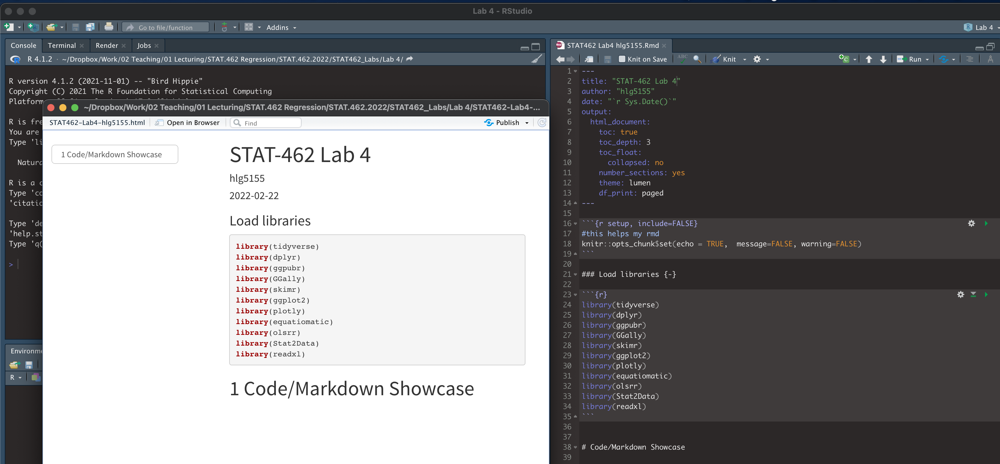
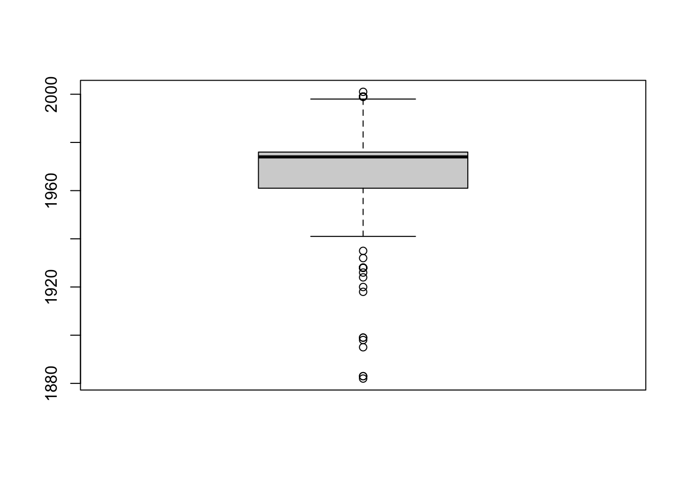
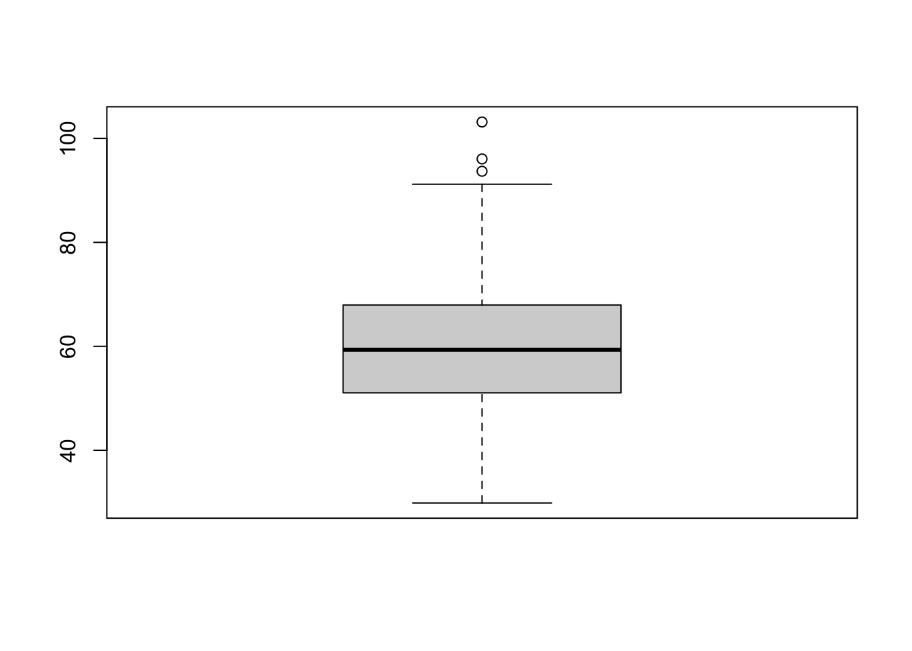
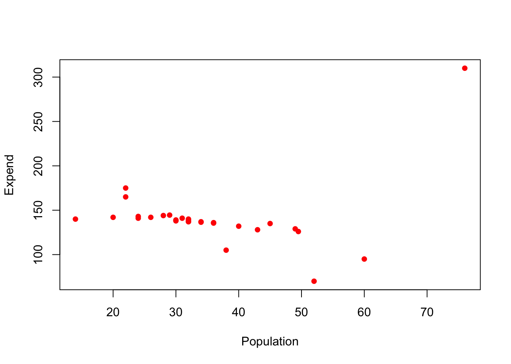
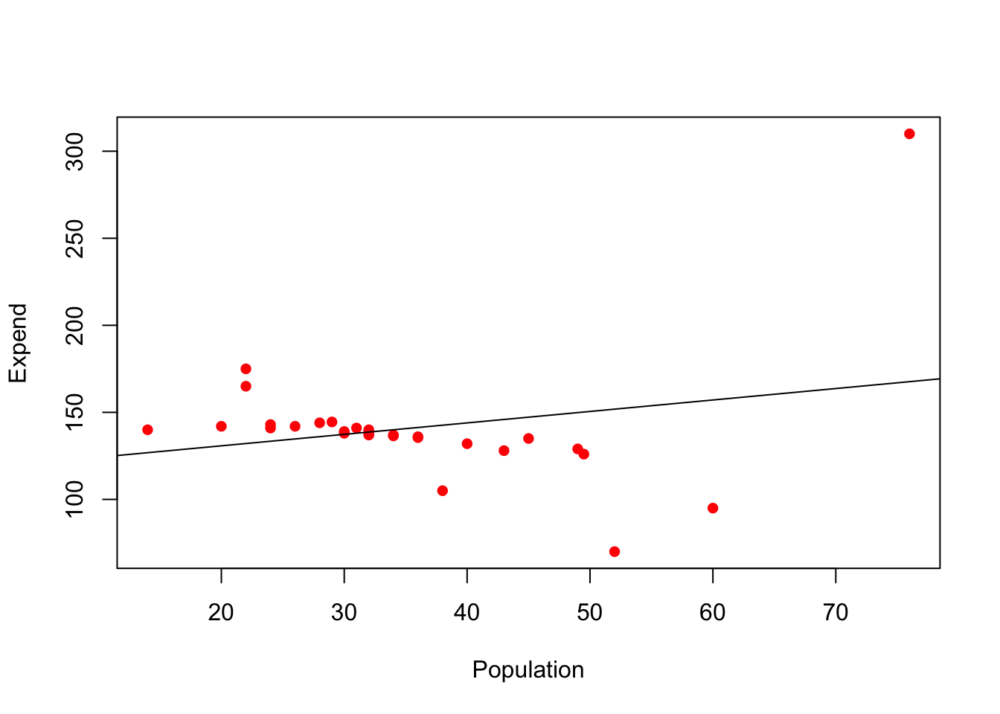
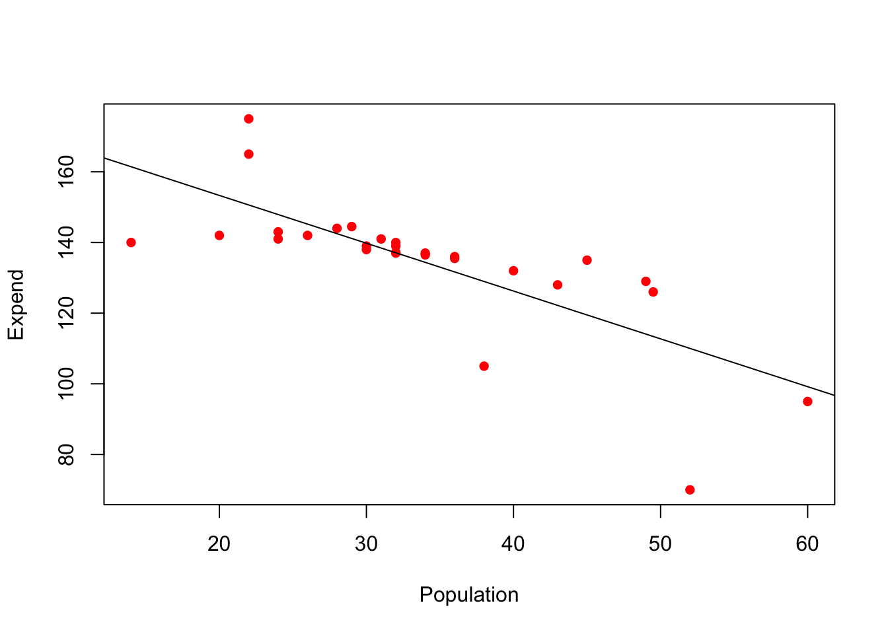
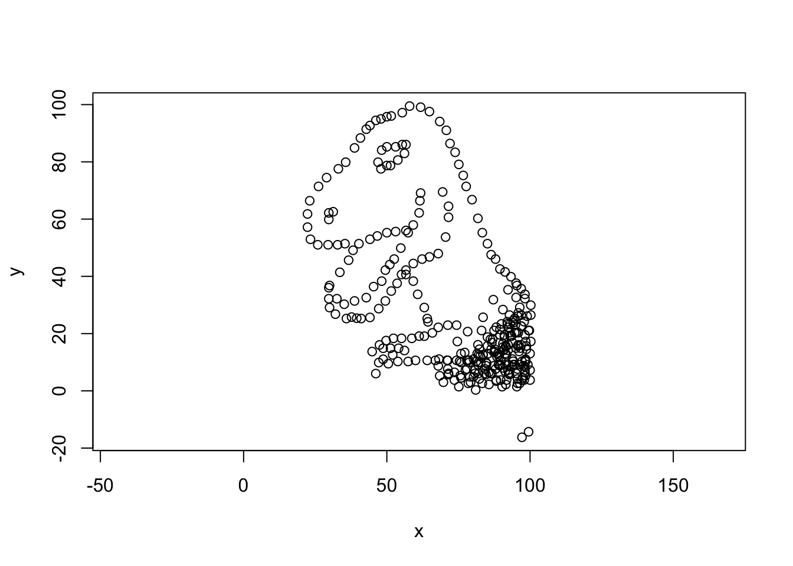

Lab 4: Code showcase
STAT-462 - Regression Analysis
Dr Helen Greatrex
Learning objectives
It’s nearly spring break, so this lab is one big code showcase to get comfortable with the commands.
By the end of this week’s lab, you will be able to:
- Feel comfortable reading in and filtering data
- Feel comfortable with the core regression commands.
- Look at LINE assumptions
Assignment 4 is due by midnight before spring break. See here I PROVIDE HELP UNTIL THE END OF NEXT WEEK’S LAB. After next week’s lab (All of Wed night/Thurs/Fri) is for your own finishing up.
I need help
There is a TEAMS discussion for lab help CLICK HERE. Remember to include a screenshot of the issue and a short description of the problem. Also try googling the error first.
Every time you re-open R studio check you are using your project file (does it say Lab 4 at the top?).
EVERY TIME YOU RE-OPEN R-STUDIO YOU NEED TO RE-RUN ALL YOUR CODE CHUNKS. The easiest way to do this is to press the “Run All” button (see the Run menu at the top of your script)
If the labs are causing major problems or your computer hardware is struggling (or you have any other software issue), Talk to Dr Greatrex. We can fix this and there are other free/cheap options for using R online.
STEP1: Lab set-up. DO NOT SKIP!
- Create a new project for Lab 4. If you are stuck, see previous labs or Tutorial 2.1.
- Copy your lab template to your lab 4 folder, rename as STAT-462_Lab4_EMAILID.Rmd (e.g.STAT-462_Lab4_hlg5155.Rmd) and open. THIS LAB IS ONE BIG CODE SHOWCASE. Delete all the headings/subheadings after Code Show case.
- In the library section, add a new code chunk and use this code to load the following libraries.
If some don’t exist on your computer or on the cloud, use Tutorial 2.3 to install/download them first.
To make sure they loaded OK, run the code chunk TWICE. The second time any welcome text will disappear unless there are errors.
library(tidyverse)
library(dplyr)
library(ggpubr)
library(GGally)
library(skimr)
library(ggplot2)
library(plotly)
library(equatiomatic)
library(olsrr)
library(Stat2Data)
library(readxl)
library(yarrr)- Finally, press knit to check the html works and it looks like this (with your theme)

STEP 2: Code showcase
This lab is a series of mini challenges. For each challenge, please add a new sub-heading to make it easy to grade.
You might want to make a second .Rmd file to practice the tutorials, so you can save your practice but only write up what is needed in your report
You will need the code from these NEW TUTORIALS:
Challenge 1: Leaf Analysis
The aim of this question is to support you with some of the learning objectives of question 4 in the exam.
- Use the data command to load the
LeafWidthdataset(make sure you have run the library code chunk first). Look at the help file for the dataset to understand what you are looking at and what the column names mean. In the text, identify the specific unit of analysis.
boxplot(LeafWidth$Year)
boxplot(LeafWidth$Length)
shapiro.test(LeafWidth$Year)##
## Shapiro-Wilk normality test
##
## data: LeafWidth$Year
## W = 0.85624, p-value = 1.412e-14shapiro.test(LeafWidth$Length)##
## Shapiro-Wilk normality test
##
## data: LeafWidth$Length
## W = 0.98691, p-value = 0.02123# one sided test
# You are looking at two variables: a. Year the leaves were collected b. Average length of each leaf (in mm)
For EACH of the two variables above
- Create a professional looking boxplot
- with either title or axis title
- Below the boxplot, write whether you believe the variable is likely to be Normally distributed and why.
- Add a guess of a p-value in a Wilk-Shapiro test. (you are not being graded on whether your answer is ‘correct’)
- Formally assess the normality of the variable using a Wilk-Shapiro test at a critical value of 5%. Include your H0, H1 and your conclusions. Write a comment on whether the result matches your guess. (you could also have a look at a histogram).
- H0, H1, to either refer or use the numbers in the output and conclusions
- Create a professional looking boxplot
Is the Wilk-Shapiro test one-sided or two-sided? (google it!)
- one sided
- Someone adds a new leaf to the dataset. Calculate the range of lengths are you 99% sure the new leaf will have.
# prediction interval
ybar <- mean(LeafWidth$Length)
sy <- sd(LeafWidth$Length)
n <- nrow(LeafWidth)
lowerPI <- ybar - qt(0.995,n-1)*(sy*(sqrt( (1+ (1/n)))))
upperPI <- ybar + qt(0.995,n-1)*(sy*(sqrt( (1+ (1/n)))))
lowerPI## [1] 27.10081upperPI## [1] 92.57546- Someone collects a whole new sample from your population. Given your data, what is your estimate of their average leaf length, with a 95% level of certainty.
# confidence interval
ybar <- mean(LeafWidth$Length)
sy <- sd(LeafWidth$Length)
n <- nrow(LeafWidth)
lowerCI <- ybar - qt(0.975,n-1)*(sy/(sqrt(n)))
upperCI <- ybar + qt(0.975,n-1)*(sy/(sqrt(n)))
lowerCI## [1] 58.27643upperCI## [1] 61.39984t.test(LeafWidth$Length)##
## One Sample t-test
##
## data: LeafWidth$Length
## t = 75.462, df = 251, p-value < 2.2e-16
## alternative hypothesis: true mean is not equal to 0
## 95 percent confidence interval:
## 58.27643 61.39984
## sample estimates:
## mean of x
## 59.83814- Given the Wilk-Shapiro test results above, would it have been appropriate to calculate the ranges from [4] and [5] for a variable as skewed as ‘the year the leaves were collected?’ Explain your answer. (Hint Lecture 9)
You can use a confidence interval cos clt, but vastly inappropriate to use your model for prediction or prediction intervals.)
Challenge 2: Filtering Data
You might find TUTORIAL 11: Filtering/choosing/sub-setting data useful (the code is in there!).
data("pirates", package = "yarrr")
piratenew <- dplyr::filter(pirates,parrots > 3)
mean(piratenew$tattoos)## [1] 9.033962Load the
piratesdataset from theyarrrpackage. Take a look at it and the help file.Select the value of the pirates dataset for the 15th row and 4th column (I need to see the R code!)
Filter the full pirates data so that it just includes pirates with more than 3 parrots and save to a new variable (see the tutorial..).
- What is the average number of tattoos of pirates with more than 3 parrots
- How many 3+ parrot owning, male pirates also have more than 3 tattoos.
Remove the 17th row and overwrite
Remove the row containing the tallest pirate (let’s say the data was entered incorrectly)
Challenge 3: Public safety spending
Suburban towns often spend a large fraction of their municipal budgets on public safety services (police, fire, and ambulance). A taxpayers’ group felt that tiny towns were likely to spend large amounts per person because they have such small financial bases. The group obtained data on the per-capita (per-person) spending on public safety for 29 suburban towns in a metropolitan area, as well as the population of each town in units of 1000 people. If you used 10000 thats fine
They sent you the data in the file expenditure.xslx, which you can get from Canvas.
exp <- read_excel("expenditure copy.xlsx")
exp## # A tibble: 29 × 2
## Population Expend
## <dbl> <dbl>
## 1 14 140
## 2 20 142
## 3 22 165
## 4 22 175
## 5 24 143
## 6 24 141
## 7 26 142
## 8 28 144
## 9 29 144.
## 10 30 138
## # … with 19 more rows- Download this from canvas and put it into your lab 4 folder. If you are on the cloud, just download it for now (see step 2)
BEFORE you read a file into R, it is good to look at column names. It’s very frustrating in R when column names have spaces, special characters or anything else that is difficult to type. It makes it especially hard to refer to a column/variable by name, e.g. table$columnname. You can change this in R using the names() command. But much easier is to fix the issue BEFORE reading it into R. So:
Open
expenditure.xlsxin Excel and take a look! Rename the column titles so that no column names contains spaces/special characters & check you are happy with the data. Save and close. If you are on the cloud, upload to your Lab 4 project.Use TUTORIAL 10: Reading in data to read it into R.
Use inline code to write a sentence in your report telling me the number of towns in the sample and the average population of the sampled towns. (See Lab 3 / Tutorial 4.8, Inline code). Summarize what the aim of the study is (see above), the unit of analysis, the response and predictor variables and what the taxpayer’s group expects the results to be.
skimr::skim(exp)| Name | exp |
| Number of rows | 29 |
| Number of columns | 2 |
| _______________________ | |
| Column type frequency: | |
| numeric | 2 |
| ________________________ | |
| Group variables | None |
Variable type: numeric
| skim_variable | n_missing | complete_rate | mean | sd | p0 | p25 | p50 | p75 | p100 | hist |
|---|---|---|---|---|---|---|---|---|---|---|
| Population | 0 | 1 | 35.19 | 12.98 | 14 | 28 | 32 | 40 | 76 | ▃▇▃▁▁ |
| Expend | 0 | 1 | 140.78 | 37.59 | 70 | 135 | 138 | 142 | 310 | ▁▇▁▁▁ |
- If the taxpayer’s group is correct, write (in a full sentence) whether you think the slope of Simple Linear regression model between your response and predictor should be negative or positive?
“A taxpayers’ group felt that tiny towns were likely to spend large amounts per person because they have such small financial bases.” should be negative
- Make a professional looking scatter-plot of your response and predictor (good enough to give to the taxpayers group). Describe it fully using this to help (KHAN SCATTER DESCRIPTIONS:)
plot(exp,col="red",pch=16)
- Use Tutorial 9 to fit a regression model to the data and save it as a variable called
model1. Examine the coefficients and the summary of the model fit using OLSRR (in the tutorial).
model1 <- lm(Expend ~Population,data=exp)ols_regress(Expend ~Population,data=exp)## Model Summary
## -----------------------------------------------------------------
## R 0.227 RMSE 37.279
## R-Squared 0.052 Coef. Var 26.480
## Adj. R-Squared 0.017 MSE 1389.758
## Pred R-Squared -0.905 MAE 19.972
## -----------------------------------------------------------------
## RMSE: Root Mean Square Error
## MSE: Mean Square Error
## MAE: Mean Absolute Error
##
## ANOVA
## --------------------------------------------------------------------
## Sum of
## Squares DF Mean Square F Sig.
## --------------------------------------------------------------------
## Regression 2044.358 1 2044.358 1.471 0.2357
## Residual 37523.464 27 1389.758
## Total 39567.821 28
## --------------------------------------------------------------------
##
## Parameter Estimates
## -----------------------------------------------------------------------------------------
## model Beta Std. Error Std. Beta t Sig lower upper
## -----------------------------------------------------------------------------------------
## (Intercept) 117.614 20.318 5.789 0.000 75.925 159.304
## Population 0.658 0.543 0.227 1.213 0.236 -0.455 1.772
## ------------------------------------------------------------------------------------------ In the text of your report, write formally write the model equation either using the equation knowledge from labs 2/3 or equatiomatic to extract the equation for the model as described in Tutorial 9.
use greek letter or equation format, units..
extract_eq(model1,use_coefs = T)\[ \operatorname{\widehat{Expend}} = 117.61 + 0.66(\operatorname{Population}) \]
Explain the slope and intercept within the context of the data. Explain if the slope in the output confirms the opinion of the community group?
Add the line of best fit to a new version of the scatter-plot. Explain why this initial regression might be misleading.
plot(exp,col="red",pch=16)
abline(model1)
- Use Tutorial 11 to remove the outlier. Repeat the linear regression and scatter-plot with the new data and save it as a variable called
model2. Explain how this has changed your assessment of the relationship between the variables.
exp2 <- filter(exp, Expend < 250)
model2 <- lm(Expend ~Population,data=exp2)
ols_regress(Expend ~Population,data=exp2)## Model Summary
## ---------------------------------------------------------------
## R 0.743 RMSE 13.060
## R-Squared 0.553 Coef. Var 9.692
## Adj. R-Squared 0.535 MSE 170.551
## Pred R-Squared 0.429 MAE 8.473
## ---------------------------------------------------------------
## RMSE: Root Mean Square Error
## MSE: Mean Square Error
## MAE: Mean Absolute Error
##
## ANOVA
## --------------------------------------------------------------------
## Sum of
## Squares DF Mean Square F Sig.
## --------------------------------------------------------------------
## Regression 5476.351 1 5476.351 32.11 0.0000
## Residual 4434.336 26 170.551
## Total 9910.687 27
## --------------------------------------------------------------------
##
## Parameter Estimates
## -------------------------------------------------------------------------------------------
## model Beta Std. Error Std. Beta t Sig lower upper
## -------------------------------------------------------------------------------------------
## (Intercept) 180.381 8.424 21.412 0.000 163.065 197.698
## Population -1.353 0.239 -0.743 -5.667 0.000 -1.844 -0.862
## -------------------------------------------------------------------------------------------plot(exp2,col="red",pch=16)
abline(model2)
- Normally, to calculate the correlation coefficient between two variables, we use the
cor()command or we could look at the output fromols_regress(). Let’s imagine that these have mysteriously broken. From only the information provided in the commandsummary(model2), explain how you can quickly calculate the correlation coefficient and state what it is.
summary(model2)##
## Call:
## lm(formula = Expend ~ Population, data = exp2)
##
## Residuals:
## Min 1Q Median 3Q Max
## -40.022 -3.450 2.020 4.682 24.386
##
## Coefficients:
## Estimate Std. Error t value Pr(>|t|)
## (Intercept) 180.3812 8.4243 21.412 < 2e-16 ***
## Population -1.3531 0.2388 -5.667 5.84e-06 ***
## ---
## Signif. codes: 0 '***' 0.001 '**' 0.01 '*' 0.05 '.' 0.1 ' ' 1
##
## Residual standard error: 13.06 on 26 degrees of freedom
## Multiple R-squared: 0.5526, Adjusted R-squared: 0.5354
## F-statistic: 32.11 on 1 and 26 DF, p-value: 5.844e-06sqrt(0.5526)## [1] 0.7433707- Look at the ANOVA table (middle part of
ols_regress(model2)oranova(model2)). Using the information provided there, calculate the R2 value.
ols_regress(model2)## Model Summary
## ---------------------------------------------------------------
## R 0.743 RMSE 13.060
## R-Squared 0.553 Coef. Var 9.692
## Adj. R-Squared 0.535 MSE 170.551
## Pred R-Squared 0.429 MAE 8.473
## ---------------------------------------------------------------
## RMSE: Root Mean Square Error
## MSE: Mean Square Error
## MAE: Mean Absolute Error
##
## ANOVA
## --------------------------------------------------------------------
## Sum of
## Squares DF Mean Square F Sig.
## --------------------------------------------------------------------
## Regression 5476.351 1 5476.351 32.11 0.0000
## Residual 4434.336 26 170.551
## Total 9910.687 27
## --------------------------------------------------------------------
##
## Parameter Estimates
## -------------------------------------------------------------------------------------------
## model Beta Std. Error Std. Beta t Sig lower upper
## -------------------------------------------------------------------------------------------
## (Intercept) 180.381 8.424 21.412 0.000 163.065 197.698
## Population -1.353 0.239 -0.743 -5.667 0.000 -1.844 -0.862
## -------------------------------------------------------------------------------------------#Multiple R-squared: 0.5526,- Test if the slope is significantly different to 1 (Monday-28 lecture). Show all your workings and professionally format any equations. Note, I mean is it different to 1! For half marks, you can test if it is different to zero.
-1.3531 - 1 / (0.2388)## [1] -5.540705Challenge 4: Mystery data
Download the mystery dataset from canvas into your lab 4 folder.
Read it into R using TUTORIAL 10: Reading in data and calculate the correlation coefficient.
Explain why this correlation coefficient is vastly inappropriate!
mystery <- read.csv("MysteryData.csv")
cor(mystery)## x y
## x 1.0000000 -0.5560607
## y -0.5560607 1.0000000plot(mystery,asp=1)
There is no show me something new this lab.
Submitting your Lab
Remember to save your work throughout and to spell check your writing (next to the save button).
Now, press the knit button for the final time.
If you have not made any mistakes in the code then R should create a html file in your lab 4 folder which includes your answers. If you look at your lab 4 folder, you should see this there - complete with a very recent time-stamp.
In that folder, double click on the html file. This will open it in your browser. CHECK THAT THIS IS WHAT YOU WANT TO SUBMIT.
If you are on R studio cloud, see Tutorial 1 for how to download your files
Now go to Canvas and submit BOTH your html and your .Rmd file in Lab 4.

Grading Rubric/checklist
See the table below for what this means - 100% is hard to get!
HTML FILE SUBMISSION - 10 marks
RMD CODE SUBMISSION - 10 marks
WRITING/CODE STYLE - 10 MARKS
Your code and document is neat and easy to read. LOOK AT YOUR HTML FILE IN YOUR WEB-BROWSER BEFORE YOU SUBMIT. There is also a spell check next to the save button. You have used headings and subheadings to make the report easier to follow.
You have written your answers below the relevant code chunk in full sentences in a way that is easy to find and grade. It is clear what your answers are referring to. You have used units throughout and fully explained your workings IN YOUR OWN WORDS (we put these through ‘Turn It In’.
LEAF ANALYSIS: 15 MARKS
You have successfully attempted/completed the 6 steps. 2 marks lost for each error.
FILTERING DATA: 15 MARKS
You have successfully attempted/completed the 5 steps. 2 marks lost for each error.
PUBLIC SAFETY Q1-Q7: 15 MARKS
You have successfully attempted/completed the 7 steps. 2 marks lost for each error.
PUBLIC SAFETY Q8-Q13: 15 MARKS
You have successfully attempted/completed the 6 steps. 2 marks lost for each error.
MYSTERY DATA: 10 MARKS
6/10 for reading into R and calculating the correlation coefficient. Final 4 for explaining why its wrong/inappropriate.
[100 marks total]
Overall, here is what your lab should correspond to:
| Grade | % Mark | Rubric |
|---|---|---|
| A* | 98-100 | Exceptional. Not only was it near perfect, but the graders learned something. THIS IS HARD TO GET. |
| NA | 96+ | You went above and beyond |
| A | 94+: | Everything asked for with high quality. Class example |
| A- | 90+ | The odd minor mistake, All code done but not written up in full sentences etc. A little less care |
| B+ | 87+ | More minor mistakes. Things like missing units, getting the odd question wrong, no workings shown |
| B | 84+ | Solid work but the odd larger mistake or missing answer. Completely misinterpreted something, that type of thing |
| B- | 80+ | Starting to miss entire/questions sections, or multiple larger mistakes. Still a solid attempt. |
| C+ | 77+ | You made a good effort and did some things well, but there were a lot of problems. (e.g. you wrote up the text well, but messed up the code) |
| C | 70+ | It’s clear you tried and learned something. Just attending labs will get you this much as we can help you get to this stage |
| D | 60+ | You attempt the lab and submit something. Not clear you put in much effort or you had real issues |
| F | 0+ | Didn’t submit, or incredibly limited attempt. |